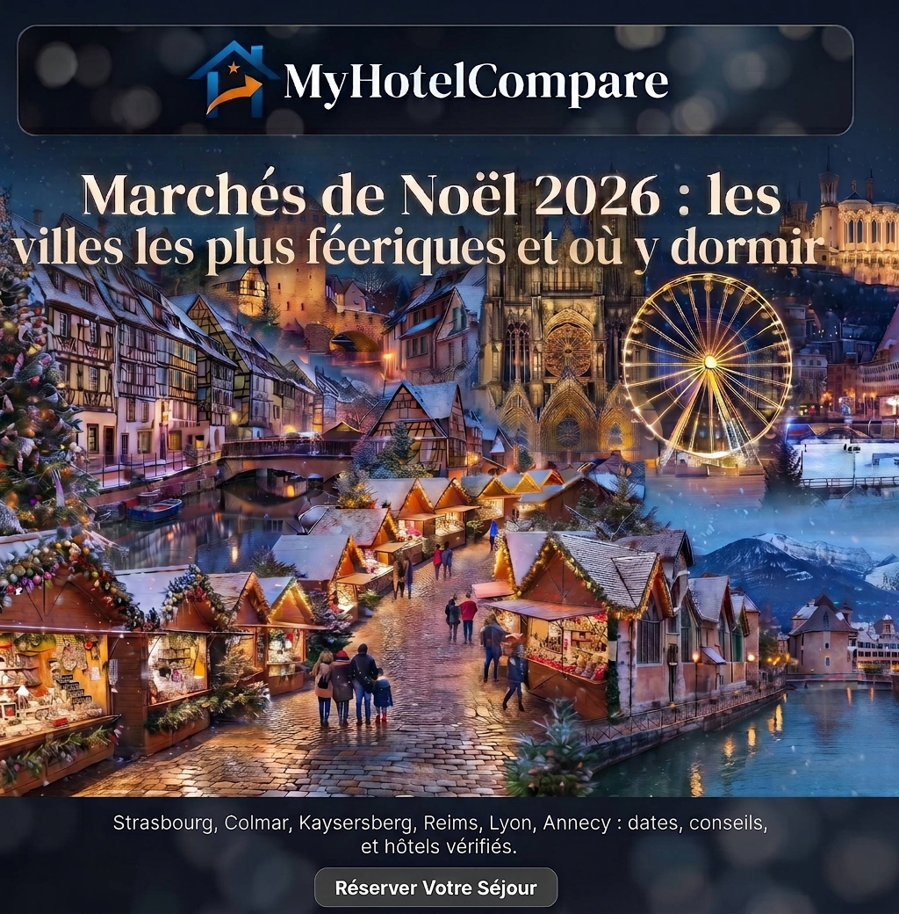

Marchés de Noël 2026 : les 6 villes les plus féeriques et où y dormir

Les marchés de Noël ouvrent cette semaine. Entre le 20 novembre et le 3 janvier, six villes de France proposent des marchés très différents : un marché vieux de plusieurs siècles, des maisons à colombages, un village alsacien ouvert seulement le week-end, la Champagne, la fête des Lumières ou un lac des Alpes.

1. Strasbourg, la « capitale de Noël »
La Ville de Strasbourg fait naître son marché, le Christkindelsmärik, en 1570 et le présente comme l’un des plus anciens d’Europe. Elle se dit « Capitale de Noël » depuis 1992. En 2026, l’ouverture a lieu le vendredi 27 novembre, avec huit marchés dans le centre historique et le grand sapin de la place Kléber. La ville annonce environ trois millions de visiteurs par an.

À savoir : les voitures sont interdites dans la Grande Île aux heures d’ouverture. Le parking relais (P+R) de la CTS coûte 4,20 € la journée, bus et tram compris, et la gare est à 10 minutes à pied des premiers chalets. Le gobelet est consigné 1 €.
2. Colmar, six marchés et la Petite Venise
Colmar compte six marchés : place Jeanne-d’Arc, place de l’Ancienne-Douane, le Koïfhus (marché couvert), place des Dominicains, le marché des enfants de la Petite Venise et le Marché Gourmand de la Montagne Verte. Les chalets sont ouverts de 11 h à 19 h du lundi au jeudi et de 10 h à 20 h du vendredi au dimanche. Le 24 décembre, ils ferment à 17 h. Le Marché Gourmand reste ouvert jusqu’au 3 janvier 2027.

Le marché date de 1988 et attire plus de deux millions de visiteurs, selon les sources touristiques. Le soir, les illuminations de la Grand’Rue et des quais du canal valent le détour.
À savoir : Strasbourg est à environ 30 minutes en train, Mulhouse à 20 minutes et Bâle à 45 minutes. Les navettes du parking relais ne circulent que les week-ends de l’Avent. Évitez les week-ends : les parkings en plein air sont pleins dès 11 h.
3. Kaysersberg, le village du week-end
Kaysersberg n’ouvre son marché que les vendredis, samedis et dimanches de l’Avent : 27 au 29 novembre, 4 au 6, 11 au 13 et 18 au 20 décembre 2026, de 10 h à 20 h. Les chalets s’installent dans la cour de l’Arsenal et derrière l’église Sainte-Croix, avec pain d’épices, vin chaud, bretzels, petits biscuits de Noël (les bredele) et artisanat (jouets en bois, verre soufflé, décorations).

Le village a été élu « Village préféré des Français » en 2017, sur France 2, et une plaque le rappelle sur le pont fortifié.
4. Reims, le marché de Champagne
À Reims, le marché s’installe sur les Hautes Promenades Jean-Louis-Schneiter et l’esplanade de la porte de Mars, avec environ 150 chalets. Une grande roue de 55 mètres se dresse place d’Erlon (8 € pour les adultes, 6 € pour les enfants). Le spectacle de lumière « Regalia » est projeté gratuitement sur la façade de la cathédrale le vendredi et le samedi à 20 h jusqu’au 3 janvier, sauf exception : vérifiez les dates avant de partir.

À savoir : jusqu’au 20 décembre, les chalets sont ouverts de 11 h 30 à 21 h du mardi au jeudi, jusqu’à 22 h le vendredi et de 10 h à 22 h le samedi. Ils sont fermés le 25 décembre, et le 24 ils ferment à 18 h.
5. Lyon, entre marché et fête des Lumières
Le marché de Noël de Lyon se tient place Carnot, à côté de la gare de Perrache, du 20 novembre au 24 décembre, avec plus de 100 chalets et environ 500 000 visiteurs par édition d’après la Ville. Il est présenté comme le plus grand de la région.

Du 5 au 8 décembre, la Fête des Lumières anime toute la ville, et le marché peut fermer plus tôt ces jours-là : l’heure n’est pas encore publiée pour 2026. Les vacances de Noël commencent le 19 décembre à Lyon, et les derniers jours sont donc les plus chargés.
6. Annecy, le Noël des Alpes
Le Noël des Alpes d’Annecy se tient du 26 novembre 2026 au 3 janvier 2027, avec près de 200 chalets annoncés par l’organisateur. Il occupe le centre-ville, les quais (Vicenza et Bayreuth) et les Jardins de l’Europe. Le spectacle d’ouverture a lieu le vendredi 27 novembre à partir de 17 h 30.

À savoir : les 24 et 31 décembre, le marché ferme à 19 h au centre-ville et à 20 h aux Jardins de l’Europe. Le 25 décembre et le 1er janvier, l’horaire d’ouverture varie selon les sources : arrivez après 15 h. Les parkings couverts du centre sont conseillés, mais la plupart limitent la hauteur à 1,90 m.
Le calendrier en un coup d’œil
| Ville | Dates 2026 | À retenir |
|---|---|---|
| Lyon | 20 nov. – 24 déc. | Fête des Lumières 5 – 8 déc. |
| Colmar | 23 nov. – 29 déc. | 6 marchés, Petite Venise |
| Reims | 25 nov. – 27 déc. | Grande roue de 55 m |
| Annecy | 26 nov. – 3 janv. | Près de 200 chalets |
| Strasbourg | 27 nov. – 24 déc. | 8 marchés, depuis 1570 |
| Kaysersberg | 27 nov. – 20 déc. | Vendredi au dimanche seulement |
Sources : sites des villes et presse, au 22 novembre 2026. Les dates de fermeture et les horaires peuvent évoluer.
Nos conseils pour bien les visiter
- Évitez les week-ends et les soirées d’affluence. À Strasbourg, les lundis, mardis et jeudis sont calmes, et le samedi est très fréquenté dès 13 h. À Colmar, les parkings en plein air sont pleins dès 11 h le week-end.
- Combinez les villes d’Alsace en train. Colmar est à environ 30 minutes de Strasbourg et le trajet évite de chercher une place. À Strasbourg, le dernier TER vers Sélestat, Colmar et Mulhouse part à 23 h 20 le vendredi et le samedi (horaire théorique jusqu’au 13 décembre).
- Réservez votre hôtel tôt. Les chambres au centre de ces villes se remplissent vite en décembre : comparez les notes et les prix dans nos hôtels et lisez comment trouver un hôtel moins cher.
- Partez en voiture sans autoroute. Préparez votre trajet avec notre planificateur d’itinéraires, ou lisez notre trajet Strasbourg – Milan sans autoroute, qui part de Strasbourg.
- Choisissez la bonne date. Pour comparer les périodes, voyez notre calendrier quand partir et où.
Questions fréquentes
Quel est le plus ancien marché de Noël de France ?
Strasbourg met en avant le sien : la Ville le fait naître en 1570 et le présente comme l’un des plus anciens d’Europe.
Quel marché est le moins fréquenté ?
Les jours de semaine, hors vacances scolaires, sont les plus calmes. À Strasbourg, les lundis, mardis et jeudis sont les jours les plus tranquilles.
Quel marché de Noël ouvre en premier ?
Parmi nos six villes, Lyon ouvre le 20 novembre 2026, puis Colmar le 23 novembre.
Kaysersberg est-il ouvert toute la semaine ?
Non, seulement du vendredi au dimanche, pendant les quatre week-ends de l’Avent : 27 au 29 novembre, puis 4 au 6, 11 au 13 et 18 au 20 décembre 2026.
Faut-il venir en voiture ?
Pas forcément. À Strasbourg, les voitures sont interdites dans la Grande Île aux heures d’ouverture, et à Colmar le train depuis Strasbourg dure environ 30 minutes. Le parking relais est une bonne solution.
🎄 Réservez votre séjour
Comparez les hôtels de votre ville de marché de Noël, avec les notes, les prix et les avis des voyageurs.
Comparer les hôtelsSources et méthode
Les dates et les chiffres viennent des sites des villes, des offices de tourisme et de la presse, consultés le 22 novembre 2026 : The Connexion (dates 2026 des marchés de France), Onivapp (Strasbourg, Annecy, Reims, Lyon), Ryo (Colmar) et Noël à Colmar (Kaysersberg). Les chiffres de fréquentation sont ceux annoncés par les villes et les sources touristiques. Les horaires 2026 de Strasbourg ne sont pas tous publiés : vérifiez-les avant de partir. Le choix de ces six villes est une sélection de MyHotelCompare, pas un palmarès officiel. Les images signalées comme illustrations ne sont pas des photos d’archives des marchés.